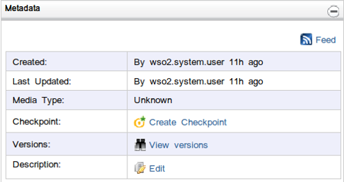

The WSO2 Registry is a repository that stores resources in a structured way. Here are some of the features provided by the registry interface.
In the navigator, under Registry, click Resources.
Figure 1 : Registry User Interface
Use the breadcrumb to navigate backward in the current branch of the directory path, by clicking on a directory name in the breadcrumb. Note that you can access the root of the directory path by clicking the Home icon in the breadcrumb.

Figure 2: The Breadcrumb
The meta data panel displays the following properties of the resource or the collection

Figure 3 : The meta data panel
This panel displays the properties of the currently selected resource or collection. New properties can be added, while existing properties can be edited or deleted.

Figure 4 : The properties panel
If the currently selected entity is a collection, the Content Panel shows the child entries under that collection. It provides details of each entry. An entry can be either another collection or a resource.

Figure 5 : View of Directory Entries
If the currently selected entity is a resource, the Content panel provides a user interface through which you can display, edit upload, and download the content.

Figure 6 : View of the Content
Symbolic links and Remote links can be created in a similar way to adding a normal resource. Add resource drop down list contains options to add symbolic and remote links.

Figure 7 : Add Symbolic Link
When adding a symbolic link, you have to provide a name for the link and the path of an existing resource or collection which is being linked. It creates a link to the particular resource. The created symbolic link is shown by an icon with an arrow in the entries panel.

Figure 8 : Symbolic Link
Adding a Remote link is much similar to adding a symbolic link. You can mount a collection in a remotely deployed registry instance to your registry instance by adding a remote link. You can provide a name for the remote link in the name field, and choose the instance to which you are going to mount (Please refer the registry user guide to see how to configure the remote instances in registry.xml). You can give the path of the remote collection which you need to mount for the path field, or else the root collection will be mounted.

Figure 9 : Add Remote Link
After mounting the remote collection you can access and work on that collection from your local instance.
Each collection or resource that you create and store on the repository has an associated media type. However, you also have the option to leave this unspecified enforcing the default media type. There are two main ways in which you can configure media types for resources.
The first method is by means of a one-time configuration which can be done by modifying the mime.types file found in the server configuration directory. This can be done just once before the initial start-up of the server.
The second method is to configure the media types via the server administration console. For collections the first method does not apply, and the only available mechanism is to configure the media types via the server administration console.
Initially the system will contain the media types defined in the mime.types file will be available for resources and a set of default media types will be available for collections.
Managing media types for resources can be done via the server administration console, by editing the properties of the /_system/config/repository/components/org.wso2.carbon.governance/media-types/index collection. This collection contains two resources, collection and custom.ui. To manage media types of collections and custom user interfaces, you need to edit the properties of these two resources.

Figure 10 : Editing Media Types
The Subscriptions portlet allows you to add subscriptions to resources and collections. Clicking Add Subscription brings up a form which allows users to create new subscriptions. If you already have any subscriptions, they will be listed in a table displayed within this portlet.

Figure 11: Add Subscriptions
Once a subscription has been added, you are also allowed to delete subscriptions (or unsubscribe), by clicking on the relevant Delete link.

Figure 12: Manage Notifications
Adding a subscription involves selecting the event type and the notification method. The event types supported by default are as follows:
Please note that some of these events may not be available for certain types resources and collections. We support a variety of notification methods as well.
Based on the notification method you select, you may be required to provide additional information, such as the e-mail address to use of the name of the user of whom the profile will be used. Having done this step, you will have to click on the Subscribe button to add a subscription (see Figure above).